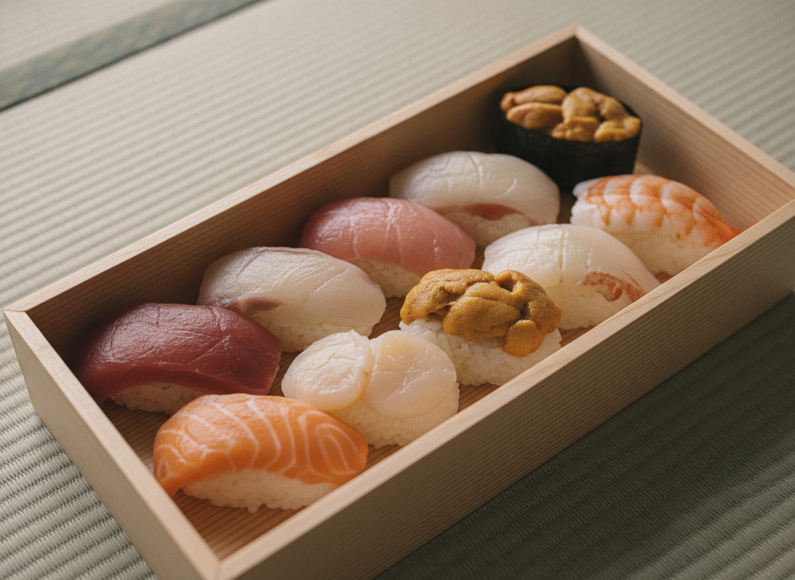
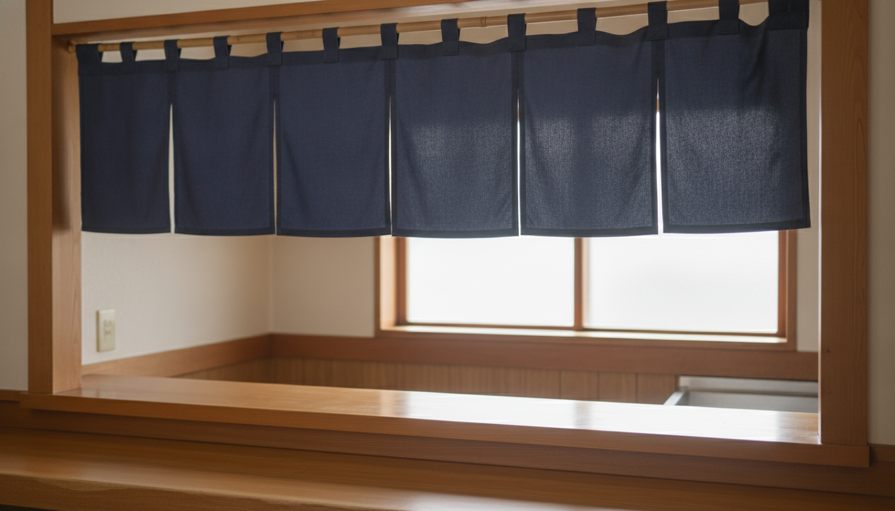

にぎり
その日のネタを、一貫ずつ。大ぶりで新鮮なネタが評判の、看板のお寿司です。
SUSHI — KAMIFUKUOKA
注文を受けてから握る、持ち帰りのお寿司。
上福岡・大原で四十余年、大将ひとりの店です。
月曜定休 ／ 11:00–14:00・15:00–19:00
※画像はイメージです
ABOUT
上福岡駅の東口から、市役所通りの脇道を少し。大通りから奥に入った一方通行沿いに、暖簾がかかります。創業からもうすぐ四十二年になるそうで、大将がひとりで握る、持ち帰り専門の小さなお寿司屋さんです。
ネタのサイズが大きく、注文を受けてからすぐに作ってくれる——回転寿司やチェーンにはない一貫を、気軽なお値段で。地元の常連さんに長く愛され、最近は若いお客さんも増えているそうです。

注文を受けてから、一貫ずつ。
※画像はイメージです
SHOP INFO
| 店名 | 寿司のえびす |
|---|---|
| 住所 | 埼玉県ふじみ野市大原1-1-11 |
| アクセス | 上福岡駅 東口。市役所通りの路地を入った先 |
| 営業時間 | 11:00–14:00 ／ 15:00–19:00 |
| 定休日 | 月曜 |
| ご利用 | お持ち帰り専門 |
| 電話 | 049-266-1043 |
CONTACT
ご注文・お問い合わせ、お持ち帰りのご予約は、お電話でどうぞ。